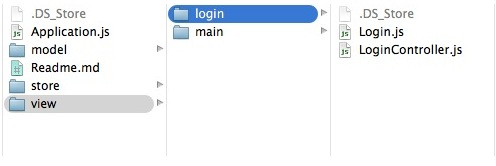

最经常要求提供的教程之一就是如何做一个登录系统。我们我们就来创建它。 请注意，这只是创建一个登录系统的一种方式。还有很多其他可行的选择。这意味着向你展示一种方法来创建具有登录/注销功能的应用程序。对于本指南中，我们将使用ExtJS 6 中的 classic toolkit 来构建登录应用程序例子。
注意：ExtJS 6 创建应用程序时提供了 classic toolkit, modern toolkit，或同时使用两种的(在通用应用程序中)选择。本指南特别侧重于 classic toolkit 。这就是说，使用 modern toolkit 是差不多的， 因此你在以后翻译转换组件时没必要感到困惑。通常应用程序把包含 classic 和 modern 的视图放到同一个应用根目录下。如果你按照本指南，并创建了一个通用的应用程序，你的视图将存放在 {appRoot}/classic/view/ 而不是 {appRoot}/app/view/目录下。
免责声明： 本教程意在给用户展示可以创建包含 “logged in” 和 “logged out” 视图的应用程序的一种方法。本教程并不试图实现安全数据连接，会话管理，真实的身份验证等。它仅用于教育目的。
第一步 - 生成你的应用程序
我们想要生成应用程序的第一件事情就是使用 Sencha Cmd。你可以通过命令行界面，或CLI执行以下命令：
sencha -sdk /path/to/ExtSDK generate app -classic TutorialApp ./TutorialApp注意： 为了完整起见，下面的语句将产生一个 modern 应用程序：
sencha -sdk /path/to/ExtSDK generate app -classic TutorialApp ./TutorialApp而下面会产生一个通用的应用程序：
sencha -sdk /path/to/ExtSDK generate app TutorialApp ./TutorialApp注意： 如果你没有 Sencha Cmd，或者不熟悉使用她，请在处理之前阅读 Cmd 简介指南 。
由此产生的TutorialApp是一个功能齐全的由Cmd的生成应用程序，我们将作为登录/注销应用程序的基础。你可以通过导航到应用程序的位置在你的Web服务器查看该应用程序。例如：
http://localhost/TutorialApp或者通过由新生成的TutorialApp文件夹内运行“sencha app watch”。这会启动一个Jetty服务器，它移除了传统web服务器的需求。如果你使用 “sencha app watch”, 你可以在这里使用这个来启动该应用程序：
http://localhost:1841/第二步 - 创建登录视图组件
接下来，我们要定位到我们新生成的TutorialApp. 向下展开到生成的应用程序“app/view/”文件夹中。你应该看到默认生成的“main”文件夹中。这个目录包含 Main.js, MainController.js, 和 MainModel.js 等文件。
让我们继续前进，并通过创建名为“Login”的新的应用app/view 目录为准备登录功能项目做准备。创建“app/view/login/”文件夹后，下面的文件添加到提到的文件夹中：
- Login.js
- LoginController.js由此产生的文件结构应该是这样的：

第三步 - 禁用主视图(mainView)
应用程序的主视图 配置 是一种非常方便的方式来自动加载并利用Viewport 插件实例化“TutorialApp.view.main.Main”。然而，我们在挑选初始化视图之前需要评估一下Ext.application的启动方法。 举例来说，如果用户还没有登录，我们不希望创建的主视图。
对于这个练习的目的，让我们删除 mainView 配置 从应用程序 在 “{appRoot}/app.js” 的配置
注意： 既然我们已经删除 mainView，刷新你的应用程序会导致一个空白页，因为没有类被实例化。
第四步 - 创建登录窗口
接下来，让我们创建一个登录视图。要做到这一点，我们将打开我们的空白 “{appRoot}/app/view/login/Login.js” 文件，并开始定义登录窗口。
首先，让我们来定义继承自 Window 基类的类。这看起来像这样：
Ext.define('TutorialApp.view.login.Login', {
extend: 'Ext.window.Window',
xtype: 'login'
});现在，我们已经定义了我们的 Login 类作为Ext.window.Window的延伸，其可使用 xtype login来初始化。让我们开始给我们的类的一些独特的属性。我们将从windows本身开始，增加一定的附加配置。
Ext.define('TutorialApp.view.login.Login', {
extend: 'Ext.window.Window',
xtype: 'login',
requires: [
'TutorialApp.view.login.LoginController',
'Ext.form.Panel'
],
controller: 'login',
bodyPadding: 10,
title: 'Login Window',
closable: false,
autoShow: true
});我们将逐步演示这些配置的意思。
要求(requires)
这个 requires 块可以确保我们初始化 Login 窗体之前需要依赖的任何类都包括进来。我们需要包括 LoginController.js 因为我们要把它指定为我们下一行控制器。 我们还需要包括 Ext.form.Panel 因为我们的视图包含一个表格面板。
控制器(controller)
这个 controller 配置将指派到 ViewController，并被Login窗口实例关联到。这个控制器(controller)提供了一个地方包括了和Login窗体或者它的子组件相关联的所有逻辑。在这里，我们指定控制器进行登录 login，这将是我们的控制器的别名。
主体填充(bodyPadding)
主体填充(bodyPadding) 的配置是纯美学的。 这个“10px”填充配置应用于窗体主体内容的外观。
标题(title)
该字符串传递给创建一个标题(title)头(header)配置结果，并添加字符串值作为它的标题。
可关闭(closable)
可关闭(closable) 决定窗口是否可以关闭。窗口在默认情况下有个可关闭按钮。然而，由于这是一个登录窗口，我们不希望用户关闭它。如果他们一定要(DID)关闭它，会留下一个空白页。
自动显示(autoShow)
窗体是默认是隐藏的。设置 autoShow 为 true ，当窗体创建时就会显示。另一个选择是，当我们想窗口是可见的是用编程方式调用窗口show 方法。
现在，我们已经讨论过的Windows配置，让我们给它的一些子组件。由于这将是一个登录表单，我们将创建一个表单面板作为窗口的子类。然后，我们将添加两个textfields文本字段，一个 Display field显示字段，以及一个提交 Button。
此文件的最终代码应显示如下：
Ext.define('TutorialApp.view.login.Login', {
extend: 'Ext.window.Window',
xtype: 'login',
requires: [
'TutorialApp.view.login.LoginController',
'Ext.form.Panel'
],
controller: 'login',
bodyPadding: 10,
title: 'Login Window',
closable: false,
autoShow: true,
items: {
xtype: 'form',
reference: 'form',
items: [{
xtype: 'textfield',
name: 'username',
fieldLabel: 'Username',
allowBlank: false
}, {
xtype: 'textfield',
name: 'password',
inputType: 'password',
fieldLabel: 'Password',
allowBlank: false
}, {
xtype: 'displayfield',
hideEmptyLabel: false,
value: 'Enter any non-blank password'
}],
buttons: [{
text: 'Login',
formBind: true,
listeners: {
click: 'onLoginClick'
}
}]
}
});让我们来讨论这些附加的内容。
窗体项目(Window items)
我们添加到Login窗体中的第一个配置是 items 配置。在 容器中(containers)，如表格面板和Login窗体本身，items 配置 可容纳 组件(Component) 或者一个组件(Component)配置对象。 items 的配置也可以是组件或组件配置对象的阵列。这些组件将显示在使用容器的布局(layout)容器的主体内。
xtype
每个组件类都有自己的 xtype。你可以把一个 xtype 当作轻松地创建一个组件的实例的快捷方式。在这种情况下，我们已经配置了用“form” xtype 带子项的Login窗体(“form” 作为 Ext.form.Panel 类的 xtype)。 Form 面板是特殊类型的面板(Panels)，其中包括用于输入领域的方便的配置选项。
表单项目(Form Items)
接下来，你会看到另一个 items 数组(array)的熟悉的面孔。这里我们构建额外的 items 通过使用更深层次的 items array。我们放置了更多的 Components 在它的父组件 Form panel 里。在这种情况下，我们嵌套的组件是表单字段构成登录表单。
因为他们是非常完美的解释，我们可以快速地通过这个数组组件。第一项(item)有个 xtype 来自于 Ext.form.field.Text textfield，名称叫 “username”，一个 fieldLabel 的 “username”, 和 allowBlank 的属性 “false”。这可以归结为一个名字值和字段标签的文本字段。该字段不能留空，并通过验证 (见下文 “formBind” )。
下一个字段是几乎相同的除了所述类型被设置为“密码”(“password”)。这将你输入 * 为了安全起见。
最后一个 items 数组(array)成员是 displayfield。一个Display字段是文本字段，不是表单提交的字段。它是用于传送数据非常有用不需要之前提到的用户数据。在这种情况下，我们可以通知任何非空密码将允许提交表单的用户。
按钮(buttons)
我们在这里添加的最后一位是一个 buttons 列表(array)。 这是个用于在你的面板(panel)添加按钮(Buttons) 到页脚Toolbar工具栏的便捷配置(config)。这种特殊的按钮包含文本“Login”，将用于点击提交到lgoin 窗体。
表单绑定(formBind)
我们的按钮(Button)包含一个名为 formBind配置(config)，这个设置为“true”。当一个组件(Component)的 formBind 设置成“true”，它的 disabled/enabled 取决于Form的有效性状态。这意味着该按钮(Button)将无法点击，直到两个输入字段包含值。
侦听器(listeners)
The listeners 对象被配置事件和方法/函数，将被这些事件触发响应。在这种情况下，我们将等着别人来点击按钮(Button)。当有人点击按钮时，我们转发“forward” 事件到onLoginClick方法。 这个 onLoginClick 方法将在我们的Login控制器(controller)后面被定义。
注意： 我们还没有实例化Login视图，因此刷新应用程序不会看到任何变化。
第五步- 增加登录逻辑
下一步，让我们创建 Login 控制器(controller)，它是一个包含和用户Login视图(view)交互逻辑的类。要做到这一点，我们要打开空白的 {appRoot}/app/view/login/LoginController.js 文件， 并且开始定义我们的Login窗体逻辑。
The entirety of LoginController.js is as follows:
Ext.define('TutorialApp.view.login.LoginController', {
extend: 'Ext.app.ViewController',
alias: 'controller.login',
onLoginClick: function() {
// This would be the ideal location to verify the user's credentials via
// a server-side lookup. We'll just move forward for the sake of this example.
// Set the localStorage value to true
localStorage.setItem("TutorialLoggedIn", true);
// Remove Login Window
this.getView().destroy();
// Add the main view to the viewport
Ext.create({
xtype: 'app-main'
});
}
});上面的代码可能有点断章取义，它会使我们在下面讨论 launch 方法更有意义。这个类包括一个 onLoginClick 方法当点击lgoin按钮是被调用。
这些代码位有注释来描述每个语句的目的，但让我们来看看他们一块块作进一步的解释。
onLoginClick()
首先，我们要创建一个名为 onLoginClickonLongClick方法。这个方法时直接对应到Lgoin视图(view) 上的登录按钮点击事件。
作为注释中所提到的，这里就是你调用你的服务器，以验证用户的凭据是有效的地方。这通常会来在AJAX或REST请求的形式。然而，在本教程中， 我们将接受任何非空白输入。成功后，你就会进入代码的其余部分。如果失败，你将允许用户重新输入其凭据。当然，还有在这种情况下，没有失败的可能性，所以让我们继续前进！
本地存储(localStorage)
我们正在利用 本地存储(localStorage) 本地存储在本教程中，以保持用户登录状态。经过一个成功的凭证检查，我们可以确定用户的主要应用视图适当的访问。然后，我们可以设置本地存储(localStorage)键/值对让应用程序知道用户是有效的。 接下来，我们将检查记录在 TutorialLoggedIn localStorage 设置为“真”在我们最初的启动(launch) 方法 (覆盖在下面更详细的“launch”一节中)。
getView()
ViewControllers 推出了一个名为 getView()非常有帮助的方法。该getView() getView（）方法返回与ViewController中从它被称为关联的当前视图。在这种情况下，视图是Login窗口。由于我们处理登录点击作为一个成功的登录，我们不希望再出现登录窗口。所有，我们使用this.getView().destroy() 来获得对应的Login窗体然后 销毁(destroy)它。
Ext.create({ xtype: ‘app-main’ })
现在，我们已经摧毁了登录窗口，我们要改变视图显示主视图。在这种情况下，我们使用 Ext.create({ xtype: 'app-main' }) 来初始化 “{appRoot}/app/view/main/Main.js” 视图。
注意： 'app-main' 指的是xtype定义在由Sencha Cmd生成的"TutorialApp.view.main.Main”类位于”{appRoot}/app/view/main.Main.js”。
第六步 - 加入启动逻辑到Application.js
接下来,让我们讨论“{appRoot}/app/Application.js” 启动(launch) 功能。
”Application.js”是应用程序的核心。你可以“Application.js”同一层找到你的“view”、““store”,和“model”文件夹。它提供了一个方便的方法在 启动(launch) 时触发应用程序加载所有的需要的类。下面是完整的教程 “Application.js” 代码文件。
Ext.define('TutorialApp.Application', {
extend: 'Ext.app.Application',
name: 'TutorialApp',
stores: [
// TODO: add global / shared stores here
],
views: [
'TutorialApp.view.login.Login',
'TutorialApp.view.main.Main'
],
launch: function () {
// It's important to note that this type of application could use
// any type of storage, i.e., Cookies, LocalStorage, etc.
var loggedIn;
// Check to see the current value of the localStorage key
loggedIn = localStorage.getItem("TutorialLoggedIn");
// This ternary operator determines the value of the TutorialLoggedIn key.
// If TutorialLoggedIn isn't true, we display the login window,
// otherwise, we display the main view
Ext.create({
xtype: loggedIn ? 'app-main' : 'login'
});
},
onAppUpdate: function () {
Ext.Msg.confirm('Application Update', 'This application has an update, reload?',
function (choice) {
if (choice === 'yes') {
window.location.reload();
}
}
);
}
});让我们来检查一下这些代码都在做什么。
requires
我们已经描述了requires是干嘛的，但让我们接触这个特殊的数组。 对于“application.js中”的目的，我们需要准加载Login或Main图，为此，我们必须要载入“TutorialApp.view.main.Main”和“TutorialApp.view.login.Login”，保证这两个类是可用的。
启动(launch)
如前所述，launch 时执行的方法是一个函数应用程序加载运行所需的前提。这是一个理想的地方执行关于用户登录/注销申请状态的逻辑。
localStorage.getItem()
下一步是检查之前的组件，称为 TutorialLoggedIn 的 localStorage 键。们只是设置 loggedIn 变量的值。 如果它不存在, loggedIn 将为null。如果它存在,我们之前设置 TutorialLoggedIn 在LoginController中的逻辑就是 正确 的。
三元创建(Create Ternary)
大多数编程语言包含条件速记称为三元运算符的一种形式。三元操作符允许你最小化所需的代码数量，如传统的 if/else 语句。 在本例中,我们使用三元运算符， “如果 loggedIn 存在 (不为null), 我们就加载Main视图，否则加载Login视图”。然后我们使用 Ext.create 方法来实例化三元运算符的结果。
第七步 - 加入 Viewport 插件 / Logout 按钮
你可能还记得，我们从之前再本教程中删除了 mainView 配置。由于我们没有一个定义好的 Viewport ， 你的Main视图就不知道在哪里来渲染它。我们要改变这种混入的viewport 插件,这样“{appRoot}/app/view/main/Main.js”将作为我们的应用程序的窗口。这种方式,MainView占用所有可用的浏览器内的宽度和高度。就这么简单添加以下一行代码到 “{appRoot}/app/view/main/Main.js”：
plugins: 'viewport',我们也应该向应用程序添加一个注销按钮的到主要导航视图。我们会将它添加到主标签面板的标题,从任何标签的应用程序访问。我们注销按钮将处理 单击 事件使用 onClickButton 方法，在下一节中,我们将配置方法。
我们程序的 {appRoot}/app/view/main/Main.js文件是这样的：
Ext.define('TutorialApp.view.main.Main', {
extend: 'Ext.tab.Panel',
xtype: 'app-main',
requires: [
'Ext.plugin.Viewport',
'Ext.window.MessageBox',
'TutorialApp.view.main.MainController',
'TutorialApp.view.main.MainModel',
'TutorialApp.view.main.List'
],
controller: 'main',
viewModel: 'main',
plugins: 'viewport',
ui: 'navigation',
tabBarHeaderPosition: 1,
titleRotation: 0,
tabRotation: 0,
header: {
layout: {
align: 'stretchmax'
},
title: {
bind: {
text: '{name}'
},
flex: 0
},
iconCls: 'fa-th-list',
items: [{
xtype: 'button',
text: 'Logout',
margin: '10 0',
handler: 'onClickButton'
}]
},
tabBar: {
flex: 1,
layout: {
align: 'stretch',
overflowHandler: 'none'
}
},
responsiveConfig: {
tall: {
headerPosition: 'top'
},
wide: {
headerPosition: 'left'
}
},
defaults: {
bodyPadding: 20,
tabConfig: {
plugins: 'responsive',
responsiveConfig: {
wide: {
iconAlign: 'left',
textAlign: 'left'
},
tall: {
iconAlign: 'top',
textAlign: 'center',
width: 120
}
}
}
},
items: [{
title: 'Home',
iconCls: 'fa-home',
// The following grid shares a store with the classic version's grid as well!
items: [{
xtype: 'mainlist'
}]
}, {
title: 'Users',
iconCls: 'fa-user',
bind: {
html: '{loremIpsum}'
}
}, {
title: 'Groups',
iconCls: 'fa-users',
bind: {
html: '{loremIpsum}'
}
}, {
title: 'Settings',
iconCls: 'fa-cog',
bind: {
html: '{loremIpsum}'
}
}]
});第八步 - 加入主逻辑
我们几乎完成了!现在剩下的就是给用户注销的应用程序,这将改变localStorage中的 TutorialLoggedIn键的值。这个逻辑应该发生在“{appRoot}/app/view/main/MainController.js”文件。我们将添加 onClickButton 方法在 ViewController 处理注销操作。
这是本教程最后的“MainController.js”:
Ext.define('TutorialApp.view.main.MainController', {
extend: 'Ext.app.ViewController',
alias: 'controller.main',
onItemSelected: function (sender, record) {
Ext.Msg.confirm('Confirm', 'Are you sure?', 'onConfirm', this);
},
onConfirm: function (choice) {
if (choice === 'yes') {
//
}
},
onClickButton: function () {
// Remove the localStorage key/value
localStorage.removeItem('TutorialLoggedIn');
// Remove Main View
this.getView().destroy();
// Add the Login Window
Ext.create({
xtype: 'login'
});
}
});我们不应该需要很深入,因为它基本上是我们能倒推出 {appRoot}/app/view/login/LoginController.js 的代码。
总结一下这个功能，onClickButton 由按钮调用的函数处理程序生成 “{appMain}/app/view/main/Main.js” 视图。一旦检测到 click 单击事件,采取以下步骤:
删除 localStorage 键维护用户的登录状态。
销毁当前视图,这里是 TutorialApp.view.main.Main。
重新创建登录视图。
现在,你应该能够在浏览器中加载应用程序,看看一个功能完备的登录/注销应用程序。
小结
我们希望你喜欢这个教程。 T这仅仅是一个应用程序的基础,但希望我们介绍的几个概念,让你在未来的项目更容易入手。请随时通过我们的论坛，表明对未来的教程的想法。此外，随意通过支持门户网站 或 论坛的问题跟进。